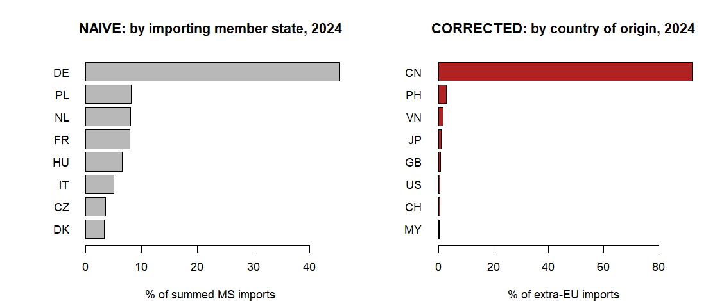
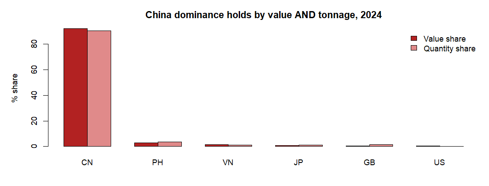
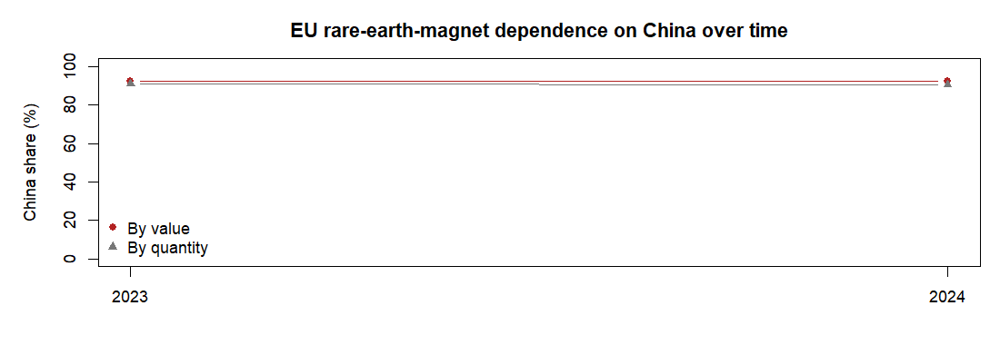

Who does the EU really depend on for rare-earth magnets?
Extra-EU imports of rare-earth permanent magnets (CN 8505 11 10), 2023–2024. Public Eurostat Comext data.
92.16%China share, by value (2024)
90.36%China share, by tonnage
0.851Supplier HHI (>0.25 = highly concentrated)
€NAExtra-EU imports, 2024
The trap, and the truth
Ranking EU member states by their magnet imports (left) spreads the picture across Germany, Poland, the Netherlands and others — and the Dutch figure is largely Rotterdam quasi-transit, goods cleared in NL but bound elsewhere, not Dutch demand. Stepping back to the EU as a single entity and ranking by country of origin (right) reveals the real dependency.

The dependence holds by value and by tonnage

Trend

Top origins, 2024
Origin
Value (€)
Value share
Qty share
CN
NA
92.16%
90.36%
PH
101 904 052
2.85%
3.7%
VN
59 032 733
1.65%
1.2%
JP
33 473 649
0.94%
1.25%
GB
22 211 006
0.62%
1.39%
US
19 136 385
0.53%
0.14%
CH
14 187 463
0.4%
0.59%
MY
8 090 193
0.23%
0.09%
Method. Extra-EU imports only; for extra-EU imports the Comext partner field is the country of origin. Bloc/aggregate codes (EU, EA, EXT_*, INT_*, WORLD) are excluded so shares are not double-counted. CN 8505 11 10 (the rare-earth-specific line) exists from 2023. Note: magnets finished in third countries from Chinese material may understate true China dependence, so these figures are a floor.